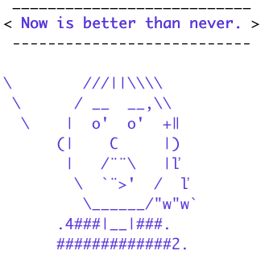
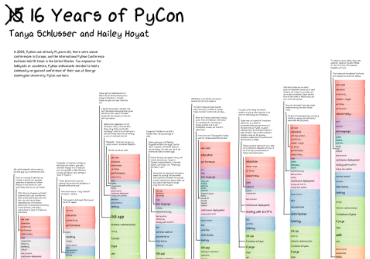

Thank you for your interest in my projects
-

Array2GIF
Provides a single top-level function,write_gif(), to write a 4-D NumPy array to an animated GIF. Pure Python. Depends on NumPy. -

timsay — cowsay but Tim Peters
Picks a random Python Zen aphorism. Has colored text. Demonstrates how to make executable Python zipfiles. With admiration for the Python legend (or AI?) Tim Peters. -

15 years of PyCon
A poster for PyCon 2018 charting historical topics, from 2003-2018. Uses nltk and scikit-learn for analysis and Processing.py for visualization.